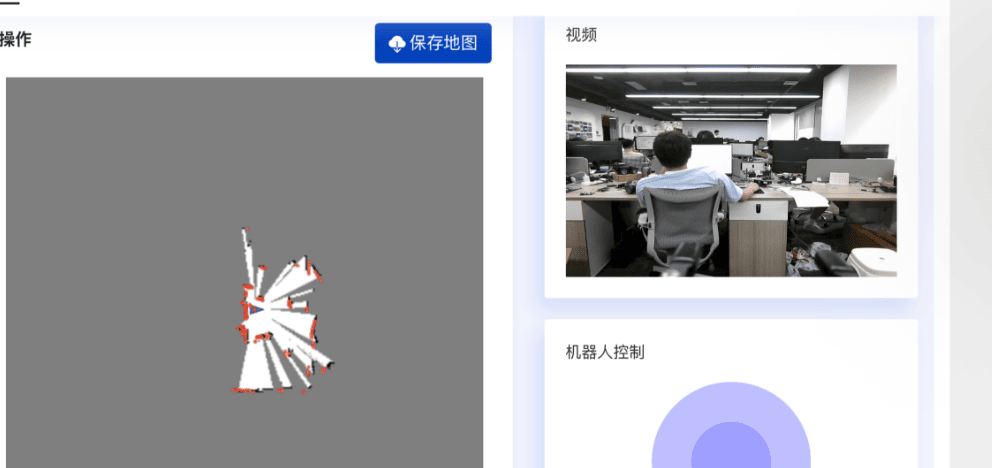
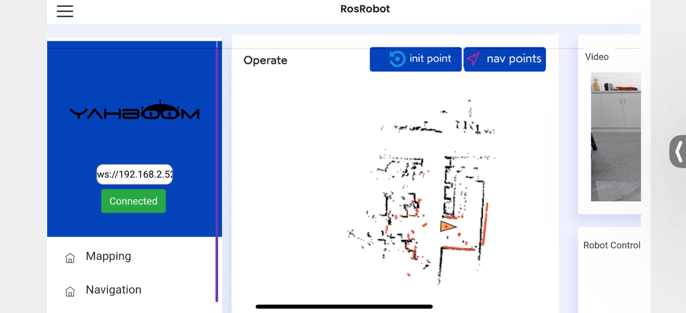

Построение карты и навигация через приложение
1. Описание содержания
В этом уроке объясняется, как использовать приложение [ROS Robot] для управления роботом при построении карты и навигации.
В этом разделе команды вводятся в терминале. Какой терминал открывать, зависит от типа используемой материнской платы. В этом разделе в качестве примера используется Raspberry Pi 5. Для материнских плат Raspberry Pi и Jetson-Nano необходимо открыть терминал на хост-компьютере и ввести команду для входа в Docker-контейнер. После входа в контейнер вводите команды этого раздела уже внутри него. Инструкции по входу в Docker-контейнер с хост-компьютера см. в руководстве к изделию [Configuration and Operation Guide] — [Entering the Docker] (для пользователей Jetson-Nano и Raspberry Pi 5, см. соответствующий раздел).
Для плат Orin достаточно просто открыть терминал и ввести команды этого раздела.
1.1. Подготовка
Сначала необходимо скачать на телефон приложение [ROS Robot]. Пользователям Android/iOS следует отсканировать QR-код для скачивания программы дистанционного управления. Пользователи iOS также могут найти и скачать приложение ROSRobot для построения карты и навигации из App Store.

Робот и телефон должны находиться в одной локальной сети. Этого можно добиться, подключив оба устройства к одной и той же сети Wi-Fi.
2. Построение карты через приложение
2.1. Запуск программы
Введите в терминале робота следующие команды, чтобы запустить построение карты через приложение.
#Запуск камеры
ros2 launch slam_mapping app_camera.launch.py
#Выберите один из трёх способов построения карты
#Gmapping
ros2 launch slam_mapping app_Gmapping.xml
#Cartographer
ros2 launch slam_mapping app_Cartographer.xml
#Slam_Toolbox
ros2 launch slam_mapping app_Slam_Toolbox.xml
В мобильном приложении появится изображение, показанное ниже. Введите IP-адрес робота, используя [zh] для китайского языка и [en] для английского. Выберите ROS2. В области Video Target ниже выберите /camera/rgb/image_raw/compressed. Наконец, нажмите [Connect].

Подключение выполнено успешно. После подключения появится следующий экран:

С помощью колёсика медленно проведите робота через область, которую нужно нанести на карту. Затем нажмите Save Map, введите имя карты и нажмите Submit, чтобы сохранить карту.
Карта сохраняется по следующему пути:
- Платы Raspberry Pi 5 и Jetson Nano:
Внутри запущенного Docker-контейнера: /root/M3Pro_ws/src/M3Pro_navigation/map
- Плата Orin:
/home/jetson/M3Pro_ws/src/M3Pro_navigation/map

2.2. Разбор launch-команды
Путь к коду:
- Платы Raspberry Pi 5 и Jetson Nano
Код программы находится внутри запущенного Docker-контейнера. Путь в контейнере: /root/M3Pro_ws/src/slam_mapping/launch/app_Gmapping.xml.
- Материнская плата Orin
Путь к коду программы: /home/jetson/M3Pro_ws/src/slam_mapping/launch/app_Gmapping.xml.
Рассмотрим на примере файла app_Gmapping.xml, какие launch-файлы он запускает. Содержимое файла app_Gmapping.xml приведено ниже:
<launch>
<include file="$(find-pkg-share rosbridge_server)/launch/rosbridge_websocket_launch.xml"/>
<node name="laserscan_to_point_publisher" pkg="laserscan_to_point_publisher" exec="laserscan_to_point_publisher"/>
<include file="$(find-pkg-share slam_mapping)/launch/gmapping.launch.py"/>
<include file="$(find-pkg-share robot_pose_publisher_ros2)/launch/robot_pose_publisher_launch.py"/>
<include file="$(find-pkg-share yahboom_app_save_map)/yahboom_app_save_map.launch.py"/>
</launch>
rosbridge_websocket_launch.xml: запускает WebSocket-сервер rosbridge для ROS (Robot Operating System).laserscan_to_point_publisher: узел для публикации данных облака точек лидара в приложение.gmapping.launch.py: узел для построения карты с помощью Gmapping.

robot_pose_publisher_launch.py: узел для публикации информации о положении робота.yahboom_app_save_map.launch.py: узел для сохранения карты.
3. Навигация через приложение
3.1. Запуск программы
Введите в терминале робота следующую команду, чтобы запустить шасси робота и лидар.
ros2 launch M3Pro_navigation base_bringup.launch.py
Введите в терминале робота следующую команду, чтобы запустить камеру.
ros2 launch slam_mapping app_camera.launch.py
Введите в терминале робота следующую команду, чтобы запустить навигацию через приложение.
ros2 launch M3Pro_navigation app_Navigation2.xml map:=/root/M3Pro_ws/src/M3Pro_navigation/map/tea.yaml
Замените map:=/root/M3Pro_ws/src/M3Pro_navigation/map/tea.yaml на путь, по которому сохранена ваша карта.
В мобильном приложении появится изображение, показанное ниже. Введите IP-адрес робота, используя [zh] для китайского языка и [en] для английского. Выберите ROS2, в области Video Target выберите /camera/rgb/image_raw/compressed и нажмите [Connect].
После успешного подключения появится следующий экран:

Как показано ниже, выберите интерфейс навигации.

Затем, исходя из фактического положения робота, нажмите [Set Initialization Point], чтобы задать роботу начальное положение. Если область сканирования лидара примерно совпадает с реальным препятствием, положение задано верно. Как показано ниже,

Затем нажмите [Set Navigation Point], чтобы задать роботу пункт назначения. Робот построит путь и будет двигаться по нему к цели. Как показано на изображении ниже,

3.2. Разбор команды
Путь к коду:
- Платы Raspberry Pi и Jetson-Nano
Код программы находится внутри запущенного Docker-контейнера. Путь в контейнере: /root/M3Pro_ws/src/M3Pro_navigation/launch/app_Navigation2.xml.
- Плата Orin
Путь к коду программы: /home/jetson/M3Pro_ws/src/M3Pro_navigation/launch/app_Navigation2.xml.
Файл app_Navigation2.xml:
<launch>
<include file="$(find-pkg-share rosbridge_server)/launch/rosbridge_websocket_launch.xml"/>
<node name="laserscan_to_point_publisher" pkg="laserscan_to_point_publisher" exec="laserscan_to_point_publisher"/>
<include file="$(find-pkg-share robot_pose_publisher_ros2)/launch/robot_pose_publisher_launch.py"/>
<node name="app_send_goal" pkg="laserscan_to_point_publisher" exec="app_send_goal"/>
<include file="$(find-pkg-share M3Pro_navigation)/launch/navigation2.launch.py"/>
</launch>
rosbridge_websocket_launch.xml: запускает WebSocket-сервер rosbridge для ROS (Robot Operating System).laserscan_to_point_publisher: узел для публикации данных облака точек лидара в приложение.robot_pose_publisher_launch.py: узел для публикации информации о положении робота.app_send_goal: узел для публикации приложением топика целевой точки навигации.navigation2.launch.py: программы, связанные с навигацией Nav2.